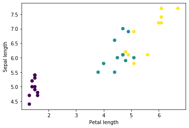

Entrenamiento personalizado — avanzado¶
30 min | Última modificación: Julio 12, 2019.
Preparación¶
[1]:
from __future__ import absolute_import, division, print_function, unicode_literals
import os
import matplotlib.pyplot as plt
import tensorflow as tf
tf.enable_eager_execution()
print("TensorFlow version: {}".format(tf.__version__))
print("Eager execution: {}".format(tf.executing_eagerly()))
TensorFlow version: 1.14.0
Eager execution: True
Dataset¶
[2]:
train_dataset_url = "https://storage.googleapis.com/download.tensorflow.org/data/iris_training.csv"
train_dataset_fp = tf.keras.utils.get_file(
fname=os.path.basename(train_dataset_url),
origin=train_dataset_url)
print("Local copy of the dataset file: {}".format(train_dataset_fp))
Local copy of the dataset file: /home/vagrant/.keras/datasets/iris_training.csv
Inspección de datos¶
[3]:
!head -n5 {train_dataset_fp}
120,4,setosa,versicolor,virginica
6.4,2.8,5.6,2.2,2
5.0,2.3,3.3,1.0,1
4.9,2.5,4.5,1.7,2
4.9,3.1,1.5,0.1,0
[4]:
column_names = [
'sepal_length',
'sepal_width',
'petal_length',
'petal_width',
'species']
feature_names = column_names[:-1]
label_name = column_names[-1]
print("Features: {}".format(feature_names))
print("Label: {}".format(label_name))
Features: ['sepal_length', 'sepal_width', 'petal_length', 'petal_width']
Label: species
[5]:
class_names = [
'Iris setosa',
'Iris versicolor',
'Iris virginica']
[6]:
batch_size = 32
train_dataset = tf.contrib.data.make_csv_dataset(
train_dataset_fp,
batch_size,
column_names=column_names,
label_name=label_name,
num_epochs=1)
WARNING: Logging before flag parsing goes to stderr.
W0712 15:33:06.306769 140281357952832 lazy_loader.py:50]
The TensorFlow contrib module will not be included in TensorFlow 2.0.
For more information, please see:
* https://github.com/tensorflow/community/blob/master/rfcs/20180907-contrib-sunset.md
* https://github.com/tensorflow/addons
* https://github.com/tensorflow/io (for I/O related ops)
If you depend on functionality not listed there, please file an issue.
W0712 15:33:06.308225 140281357952832 deprecation.py:323] From <ipython-input-6-b38e4b2864a1>:8: make_csv_dataset (from tensorflow.contrib.data.python.ops.readers) is deprecated and will be removed in a future version.
Instructions for updating:
Use `tf.data.experimental.make_csv_dataset(...)`.
W0712 15:33:06.330770 140281357952832 deprecation.py:323] From /usr/local/lib/python3.6/dist-packages/tensorflow/python/data/experimental/ops/readers.py:499: parallel_interleave (from tensorflow.python.data.experimental.ops.interleave_ops) is deprecated and will be removed in a future version.
Instructions for updating:
Use `tf.data.Dataset.interleave(map_func, cycle_length, block_length, num_parallel_calls=tf.data.experimental.AUTOTUNE)` instead. If sloppy execution is desired, use `tf.data.Options.experimental_determinstic`.
[7]:
features, labels = next(iter(train_dataset))
features
[7]:
OrderedDict([('sepal_length',
<tf.Tensor: id=65, shape=(32,), dtype=float32, numpy=
array([4.8, 5.4, 7. , 5. , 5.8, 5. , 5.5, 4.4, 5.9, 7.7, 7.7, 5.8, 6.2,
6.1, 6.9, 7.2, 6.1, 4.7, 5.5, 7.2, 6.1, 5.2, 6. , 6.9, 5.3, 6.1,
4.9, 4.7, 5.4, 6.6, 7.4, 6. ], dtype=float32)>),
('sepal_width',
<tf.Tensor: id=66, shape=(32,), dtype=float32, numpy=
array([3.1, 3.4, 3.2, 3.6, 2.8, 3.4, 2.6, 3.2, 3.2, 3. , 3.8, 2.6, 2.8,
2.6, 3.1, 3.2, 2.9, 3.2, 2.4, 3.6, 3. , 3.4, 2.9, 3.1, 3.7, 2.8,
3.1, 3.2, 3.7, 3. , 2.8, 2.7], dtype=float32)>),
('petal_length',
<tf.Tensor: id=63, shape=(32,), dtype=float32, numpy=
array([1.6, 1.5, 4.7, 1.4, 5.1, 1.5, 4.4, 1.3, 4.8, 6.1, 6.7, 4. , 4.8,
5.6, 4.9, 6. , 4.7, 1.3, 3.8, 6.1, 4.9, 1.4, 4.5, 5.1, 1.5, 4.7,
1.5, 1.6, 1.5, 4.4, 6.1, 5.1], dtype=float32)>),
('petal_width',
<tf.Tensor: id=64, shape=(32,), dtype=float32, numpy=
array([0.2, 0.4, 1.4, 0.2, 2.4, 0.2, 1.2, 0.2, 1.8, 2.3, 2.2, 1.2, 1.8,
1.4, 1.5, 1.8, 1.4, 0.2, 1.1, 2.5, 1.8, 0.2, 1.5, 2.3, 0.2, 1.2,
0.1, 0.2, 0.2, 1.4, 1.9, 1.6], dtype=float32)>)])
[8]:
plt.scatter(features['petal_length'].numpy(),
features['sepal_length'].numpy(),
c=labels.numpy(),
cmap='viridis')
plt.xlabel("Petal length")
plt.ylabel("Sepal length")
plt.show();

[9]:
def pack_features_vector(features, labels):
"""Pack the features into a single array."""
features = tf.stack(list(features.values()), axis=1)
return features, labels
[10]:
train_dataset = train_dataset.map(pack_features_vector)
[11]:
features, labels = next(iter(train_dataset))
print(features[:5])
tf.Tensor(
[[4.8 3.1 1.6 0.2]
[5.4 3.4 1.5 0.4]
[7. 3.2 4.7 1.4]
[5. 3.6 1.4 0.2]
[5.8 2.8 5.1 2.4]], shape=(5, 4), dtype=float32)
Especificación del modelo¶
[12]:
model = tf.keras.Sequential([
tf.keras.layers.Dense(10,
activation=tf.nn.relu,
input_shape=(4,)),
tf.keras.layers.Dense(10,
activation=tf.nn.relu),
tf.keras.layers.Dense(3)
])
Uso del modelo¶
[13]:
predictions = model(features)
predictions[:5]
[13]:
<tf.Tensor: id=206, shape=(5, 3), dtype=float32, numpy=
array([[ 0.39389262, 0.89719063, -1.6299461 ],
[ 0.51496124, 0.9582363 , -1.8475792 ],
[ 0.41143307, 2.6989605 , -2.2921774 ],
[ 0.44771802, 0.79480183, -1.7335105 ],
[ 0.40526047, 2.7814465 , -2.1271746 ]], dtype=float32)>
[14]:
print("Prediction: {}".format(tf.argmax(predictions, axis=1)))
print(" Labels: {}".format(labels))
Prediction: [1 1 1 1 1 1 1 1 1 1 1 1 1 1 1 1 1 1 1 1 1 1 1 1 1 1 1 1 1 1 1 1]
Labels: [0 0 1 0 2 0 1 0 1 2 2 1 2 2 1 2 1 0 1 2 2 0 1 2 0 1 0 0 0 1 2 1]
Función de pérdida¶
[15]:
def loss(model, x, y):
y_ = model(x)
return tf.losses.sparse_softmax_cross_entropy(labels=y, logits=y_)
l = loss(model, features, labels)
print("Loss test: {}".format(l))
Loss test: 2.108886241912842
Cómputo del gradiente¶
[16]:
def grad(model, inputs, targets):
with tf.GradientTape() as tape:
loss_value = loss(model, inputs, targets)
return loss_value, tape.gradient(loss_value, model.trainable_variables)
Optimizador¶
[17]:
optimizer = tf.train.GradientDescentOptimizer(
learning_rate=0.01)
global_step = tf.Variable(0)
[18]:
loss_value, grads = grad(model, features, labels)
print("Step: {}, Initial Loss: {}".format(global_step.numpy(),
loss_value.numpy()))
optimizer.apply_gradients(zip(grads, model.trainable_variables), global_step)
print("Step: {}, Loss: {}".format(global_step.numpy(),
loss(model, features, labels).numpy()))
Step: 0, Initial Loss: 2.108886241912842
Step: 1, Loss: 1.676639199256897
Entrenamiento¶
[19]:
from tensorflow import contrib
tfe = contrib.eager
train_loss_results = []
train_accuracy_results = []
num_epochs = 201
for epoch in range(num_epochs):
epoch_loss_avg = tfe.metrics.Mean()
epoch_accuracy = tfe.metrics.Accuracy()
for x, y in train_dataset:
loss_value, grads = grad(model, x, y)
optimizer.apply_gradients(
zip(grads, model.trainable_variables),
global_step)
epoch_loss_avg(loss_value)
epoch_accuracy(tf.argmax(model(x), axis=1, output_type=tf.int32), y)
train_loss_results.append(epoch_loss_avg.result())
train_accuracy_results.append(epoch_accuracy.result())
if epoch % 50 == 0:
msg = "Epoch {:03d}: Loss: {:.3f}, Accuracy: {:.3%}"
print(msg.format(epoch,
epoch_loss_avg.result(),
epoch_accuracy.result()))
Epoch 000: Loss: 1.430, Accuracy: 65.000%
Epoch 050: Loss: 0.297, Accuracy: 97.500%
Epoch 100: Loss: 0.182, Accuracy: 98.333%
Epoch 150: Loss: 0.135, Accuracy: 98.333%
Epoch 200: Loss: 0.113, Accuracy: 99.167%
[20]:
fig, axes = plt.subplots(2, sharex=True, figsize=(12, 8))
fig.suptitle('Training Metrics')
axes[0].set_ylabel("Loss", fontsize=14)
axes[0].plot(train_loss_results)
axes[1].set_ylabel("Accuracy", fontsize=14)
axes[1].set_xlabel("Epoch", fontsize=14)
axes[1].plot(train_accuracy_results)
plt.show()

Evaluación del modelo¶
[21]:
test_url = "https://storage.googleapis.com/download.tensorflow.org/data/iris_test.csv"
test_fp = tf.keras.utils.get_file(
fname=os.path.basename(test_url),
origin=test_url)
[22]:
test_dataset = tf.contrib.data.make_csv_dataset(
test_fp,
batch_size,
column_names=column_names,
label_name='species',
num_epochs=1,
shuffle=False)
test_dataset = test_dataset.map(pack_features_vector)
[23]:
test_accuracy = tfe.metrics.Accuracy()
for (x, y) in test_dataset:
logits = model(x)
prediction = tf.argmax(logits, axis=1, output_type=tf.int32)
test_accuracy(prediction, y)
print("Test set accuracy: {:.3%}".format(test_accuracy.result()))
Test set accuracy: 96.667%
[24]:
tf.stack([y,prediction],axis=1)
[24]:
<tf.Tensor: id=105681, shape=(30, 2), dtype=int32, numpy=
array([[1, 1],
[2, 2],
[0, 0],
[1, 1],
[1, 1],
[1, 1],
[0, 0],
[2, 2],
[1, 1],
[2, 2],
[2, 2],
[0, 0],
[2, 2],
[1, 1],
[1, 1],
[0, 0],
[1, 1],
[0, 0],
[0, 0],
[2, 2],
[0, 0],
[1, 1],
[2, 2],
[1, 2],
[1, 1],
[1, 1],
[0, 0],
[1, 1],
[2, 2],
[1, 1]], dtype=int32)>
Uso del modelo¶
[25]:
predict_dataset = tf.convert_to_tensor([
[5.1, 3.3, 1.7, 0.5,],
[5.9, 3.0, 4.2, 1.5,],
[6.9, 3.1, 5.4, 2.1]
])
predictions = model(predict_dataset)
for i, logits in enumerate(predictions):
class_idx = tf.argmax(logits).numpy()
p = tf.nn.softmax(logits)[class_idx]
name = class_names[class_idx]
print("Example {} prediction: {} ({:4.1f}%)".format(i, name, 100*p))
Example 0 prediction: Iris setosa (97.0%)
Example 1 prediction: Iris versicolor (88.7%)
Example 2 prediction: Iris virginica (92.1%)